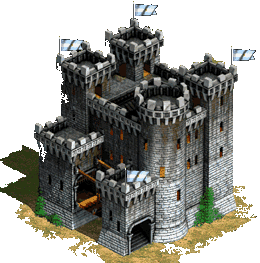

O castelo mal asombrado
Essa historia come;a a muito anos atras sobre um castelo onde vivia um rei e sua rainha
nesse castelo tambem vivia as empregadas,os soldados,e o padre mais conhecido da quela
epoca um dia de tempestade uma velha entrou pelas portas da frente dizendo
(o meu caro rei que senta num trono feito de ouro,minha cara rainha que senta do lado
do seu amado rei, pesso ajuda a voces minha aldeia pegou fogo e nao tenho mais nada
para alimentar meus netosentao peso ajuda ao meu rei) suplico sua ajuda sei que voce
e um bom homem.
O rei disse que nao ia ajudar uma simples plebeia e mandou ela sair de dentro do
castelo dele ela suplicou denovoe a resposta foi a mesma entao o salao do castelo
ficou escuro e a velho disse que amaldicoaria todos que estavao dentro do castelo
ja que o rei nao queria ajudar ela ela amaldicou todos no castelo e toda a geracao
do rei.
A velha saiu do castelo e as luzes voltaram o rei ficou assustado mais logo avia passado
um ano depois a rainha etava gravida o rei estava tao feliz um herdeiro iria nascer para
herdar o reino nove meses se passaram a rainha estava preste a dar a luz o rei estava
muito feliz seu herdeiro iria nascer a rainha deu a luz a um menino mais ele nasceu e
quando tinha um ano ele morreu com uma doenca que so um feitico de uma bruxa ansi
voltar para home